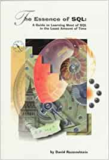

The Essence of Teaching
David Rozenshtein’s The Essence of SQL is still one of the best little tutorials I’ve ever read. It’s been out of print for years, but if you’re writing lessons on technical topics, I think it’s still worth getting, studying, and emulating.

It’s a small book: paperback-sized and only 119 pages long. Rozenshtein spends the first three of those pages explaining what tables, rows, and columns are and how to issue a query, then presents the thirteen questions the book is going to answer:
- What are the student numbers of the students who take CS112?
- What are the student numbers and names of the students who take CS112?
- Who takes CS112 or CS114?
- Who takes both CS112 and CS114?
- Who does not take CS112?
- Who takes a course which is not CS112?
- Who takes at least 2 different courses?
- Who takes at most 2 different courses?
- WHo takes exactly 2 different courses?
- Who takes only CS112?
- Who takes either CS112 or CS114? (Note the differnce from #3.)
- Who are the youngest students?
- Who takes every course?
It takes him 60 pages and lots of little examples to answer those questions. Along the way he introduces selection, filtering, Boolean operations, the “select and subtract” approach to negation, and a bunch of other ever-more-complicated ideas. With those in the bag he goes on to:
- For each department that has more than 3 professors older than 50, what is the average age of the professors?
- What is the grade point average of each student?
- What is the overall average salary of all professors who are older than 50?
- Which professors' salaries are greater than the overall average?
- Whose salary is greater than the average salary within that professor's department?
These questions motivate his coverage of grouping and aggregation; once again he motivates every new idea, no matter how small, with a question someone might want answered.
It’s not a perfect book—it could use more diagrams, for example, and I find the language overly formal in some places—but it’s a very good one, and the closest thing I’ve seen in the wild to Carroll’s minimal manual approach to lesson design. It isn’t the right approach for every situation, but I could have written Software Design by Example Using JavaScript this way, I would have.
All of which brings me to the point of this post, which is that I couldn’t write SDXJS that way. We couldn’t have written JavaScript for Data Science in this style either, though we could use it for some parts of Research Software Engineering with Python, such as the introduction to the Unix shell and the introduction to Make. The difference is that there are learning paths for the shell and Make that are continuously incrementally useful to the learner, i.e., we can arrange topics so that:
- each one is an authentic task,
- each one extends or complicates a previous one, and
- each extension or complication to the task aligns with an extension or complication to the system being taught.
I don’t know how to measure this, but I’m absolutely convinced that the reason the tidyverse is easier to teach to novices than Pandas is that the tidyverse has these same properties. Pandas is a powerful tool, but between its complicated indexing syntax and its non-linear reading order, there’s much more “trust me, you’ll need this later” than there is with the tidyverse. JavaScript is much worse: in order to do almost anything useful you have to explain callbacks and promises (which are super-useful in the same way that Homelander is a super-hero). The tool simply doesn’t permit the same kind of learning ramp as some other systems.
Which brings me back to my favorite Twilight Zone episode. I know of languages that were designed for teaching, but I don’t know of a mainstream language whose creators asked instructional designers, “Can you see a ramp here?” while there was still a chance to build one. You can’t add security or usability to a tool after it’s shipped; equally, I don’t think you can add learnability—we just have to do our best to find as gentle a path up the hill as we can.